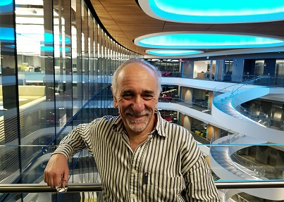

Eduardo Sontag's major current research interests lie in several areas of control and dynamical systems theory, systems molecular biology, cancer and immunology, theoretical computer science, neural networks, and computational biology.
He received his Licenciado degree from the Mathematics Department at the University of Buenos Aires in 1972, and his Ph.D. (Mathematics) under Rudolf E. Kalman at the University of Florida, in 1977. From 1977 to 2017, he was with the Department of Mathematics at Rutgers, The State University of New Jersey, where he was a Distinguished Professor of Mathematics as well as a Member of the Graduate Faculty of the Department of Computer Science and the Graduate Faculty of the Department of Electrical and Computer Engineering, and a Member of the Rutgers Cancer Institute of NJ. In addition, Dr. Sontag served as the head of the undergraduate Biomathematics Interdisciplinary Major, Director of the Center for Quantitative Biology, and Director of Graduate Studies of the Institute for Quantitative Biomedicine. In January 2018, Dr. Sontag was appointed as a University Distinguished Professor in the Department of Electrical and Computer Engineering and the Department of BioEngineering at Northeastern University. Since 2006, he has been a Research Affiliate at the Laboratory for Information and Decision Systems, MIT, and since 2018 he has been a member of the Faculty in the Program in Therapeutic Science at Harvard Medical School.
Eduardo Sontag has authored over five hundred research papers and monographs and book chapters in the above areas with over 43,000 citations and an h-index of 90. He is in the Editorial Board of several journals, including: Cell Systems, IET Proceedings Systems Biology, Synthetic and Systems Biology, International Journal of Biological Sciences, and Journal of Computer and Systems Sciences, and is a former Board member of SIAM Review, IEEE Transactions in Automatic Control, Systems and Control Letters, Dynamics and Control, Neurocomputing, Neural Networks, Neural Computing Surveys, Control-Theory and Advanced Technology, Nonlinear Analysis: Hybrid Systems, and Control, Optimization and the Calculus of Variations. In addition, he is a co-founder and co-Managing Editor of the Springer journal MCSS (Mathematics of Control, Signals, and Systems).
He is a Fellow of various professional societies: IEEE, AMS, SIAM, and IFAC, and is also a member of SMB and BMES. He has been Program Director and Vice-Chair of the Activity Group in Control and Systems Theory of SIAM, and member of several committees at SIAM and the AMS, including Chair of the Committee on Human Rights of Mathematicians of the latter in 1981-1982. He was awarded the Reid Prize in Mathematics in 2001, the 2002 Hendrik W. Bode Lecture Prize and the 2011 Control Systems Field Award from the IEEE, the 2002 Board of Trustees Award for Excellence in Research from Rutgers, and the 2005 Teacher/Scholar Award from Rutgers.
Honors:
Reid Prize article in SIAM News, July 2001
Hendrik Bode Prize at 2002 IEEE CDC (Bode Talk slides with narrative)
2002 Rutgers' Trustees Award announcement
2005 Teacher/Scholar Award photos
2011 IEEE Control Field Award (speech; photo with IEEE President Kam)